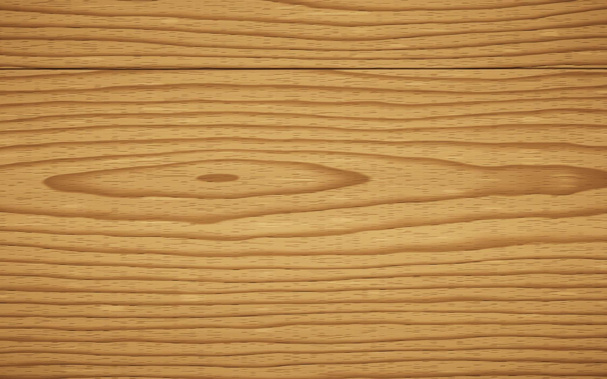

Holz nach Maß.
Tischlerei mit Meisterbrief in Berlin. Möbel, Treppen und Innenausbau aus massivem Holz, seit 1987.
Projekt anfragenWas wir bauen
Aus der Werkstatt
Alle Projekte
01 / 06Küchenblock
Pankow / Eiche, geölt / 3200 × 950 × 920 mm / 2025
 02 / 06
02 / 06Bibliothekswand
Kreuzberg / Nussbaum massiv / 5400 × 2850 mm / 2025
 03 / 06
03 / 06Arbeitstisch
Atelier Wedding / Hirnholzplatte Eiche / 2400 × 900 × 60 mm / 2024
- 04 / 06
Weinbar
Neukölln / Ladenbau, Eiche Altholz / Tresen 7,8 m / 2024
- 05 / 06
Kastenfenster
Charlottenburg / Restaurierung Kiefer / 14 Flügel / 2023
- 06 / 06
Faltwerktreppe
Friedrichshain / Esche, gebürstet / 16 Steigungen / 2023
Wir bauen Dinge, die länger halten als ihre Rechnung. Jedes Stück entsteht in unserer eigenen Werkstatt, vom ersten Aufmaß bis zur letzten Ölschicht.
So arbeiten wir
Aufmaß vor Ort
Wir kommen vorbei, messen aus und hören zu. Kostenfrei im Stadtgebiet.
Entwurf und Angebot
Sie erhalten eine Zeichnung mit allen Maßen und einen Festpreis. Änderungen besprechen wir in Ruhe.
Holzauswahl
Im Lager wählen Sie die Bohlen für Ihr Stück selbst aus. Maserung ist Geschmackssache.
Fertigung
Zuschnitt, Verleimung, Oberfläche. Je nach Umfang zwei bis acht Wochen.
Montage
Wir liefern, bauen ein und nehmen den Staub wieder mit.